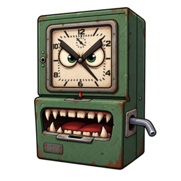

Ahgora para Channel
O jeito mais rápido de fazer marcações de ponto
1. Abrir, autenticar e conectar
Abre Ahgora e Channel de uma vez. Ela não lê nem armazena as senhas.
A página do Ahgora ainda não foi aberta.
A página do Channel ainda não foi aberta.
Acesso manual — somente se necessário
Vá até a aba correta e clique no ícone da extensão. Cada aba exige seu próprio clique.
2. Definição de marcações de ponto no Channel
Salve combinações de projeto + atividade. O nome da TAG é criado automaticamente e poderá ser escolhido em cada dia novo.
Cache ainda não consultado.
Criar TAG
Opções avançadas desta TAG
TAGs salvas
3. Conjuntos e regras automáticas
Salve a distribuição de um dia como conjunto. Depois, reutilize-a manualmente ou crie regras semanais para aplicá-la aos novos dias.
Templates de conjuntos
Cada template preserva os percentuais e as horas originais. Crie um usando “Salvar como conjunto” em um dia da revisão.
Regras de aplicação
Interface semanal no padrão do Google Calendar. A primeira regra ativa compatível com o dia será aplicada.
Misture templates e defina a participação de cada um. O total precisa ser 100%.
4. Capturar e comparar marcações
Um por linha, no formato AAAA-MM-DD=HH:MM,HH:MM. Ficam somente na sessão do navegador.
Progresso da captura
A captura ainda não começou.
A consulta ainda não começou.
5. Revisar e selecionar dias 0 itens
Confira as diferenças e distribua cada dia novo entre uma ou mais marcações. O total do dia é sempre preservado.
- Capturado
- Novos para revisar
- Selecionados para enviar
Dias novos sem avisos são selecionados automaticamente. Dias iguais, divergentes ou com aviso não são enviados sem revisão. Reduzir uma marcação cria outra com o saldo restante.
6. Enviar ao Channel
Esta etapa só é liberada quando houver dias selecionados na revisão. Um único clique inicia o envio de toda a seleção.
Progresso do envio
Selecione os dias que deseja enviar na etapa 5.
Um clique envia todos os itens selecionados diretamente ao Channel. Em caso de resposta ambígua, a fila é interrompida para evitar duplicidade.